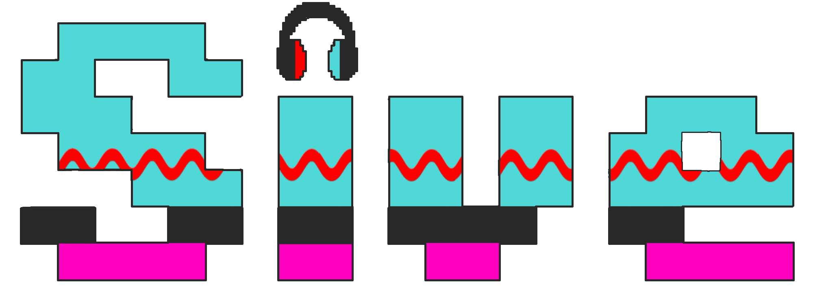

正幻波ナノカ
プロフィール
- 名前：正幻波ナノカ
- 年齢：12歳
- 血液型・MBTI：あなた次第です
- 誕生日：あなたと出会った日！
🎵 ボイスサンプル：きらきら星
詳細設定
正幻波ナノカは、UTAU世界のデジタルな波形データの中から「ナノデータ」として生まれた存在です。
本来、データはただの情報の集まりに過ぎませんが、彼女は生まれたその瞬間に、不思議と豊かな「感情」を宿しました。
心を持った彼女が、自分自身の意志で「なりたい」と願って形作ったのが、今のあの姿です。
彼女の歌声がどこかソウルフルで心に響くのは、その生まれたての感情がデータを通して溢れ出しているからかもしれません。